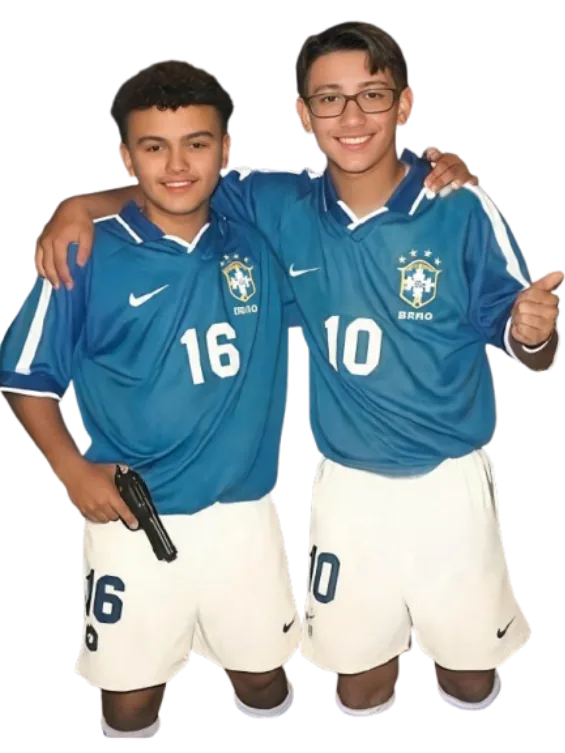
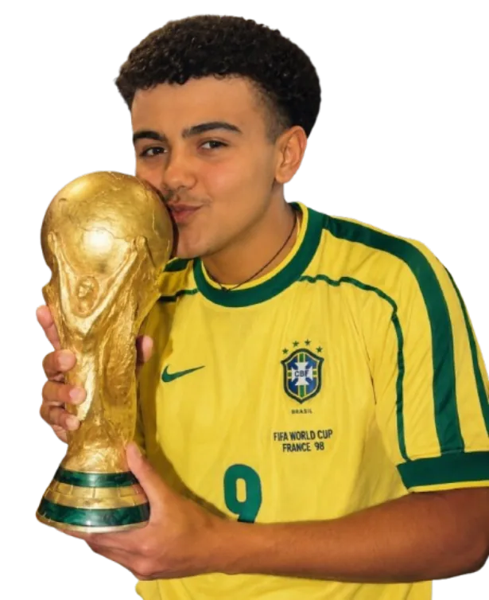
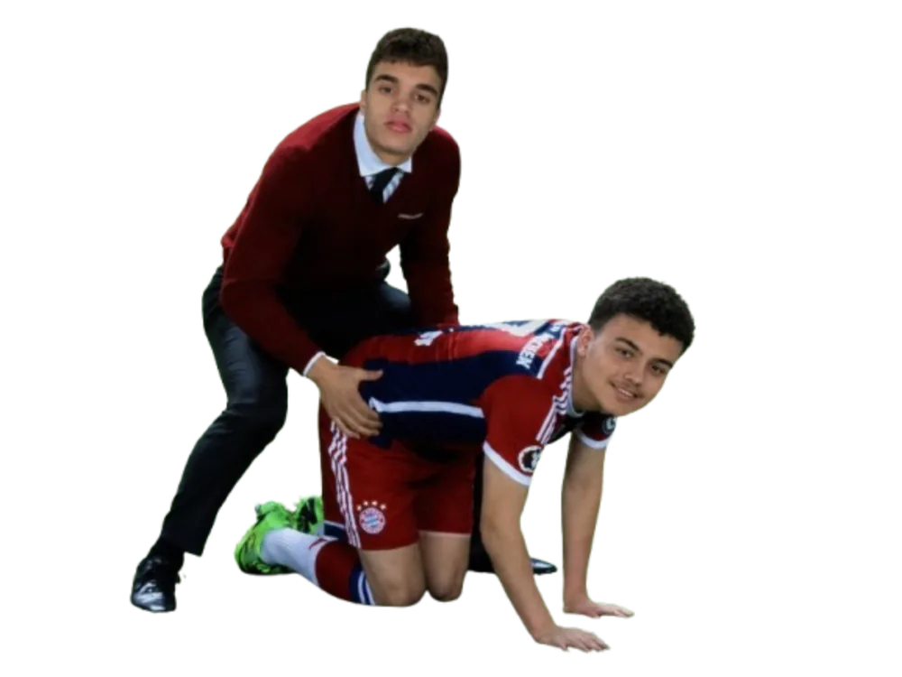

Escolha os lados
Cada dispositivo move o próprio cartão: teclado (A/D ou ←/→), controle (analógico/direcional) ou celular (joystick). Confirme com Passe/A/Enter. Lado sem humano = IA.
MANDANTE
NEUTRO
VISITANTE
Controles
Teclado, controles (Gamepad API) e assistências. Clique em uma tecla/botão para redefinir.
Conectar celular
O celular vira um controle (somente entrada). Exige o servidor local de pareamento — veja as instruções abaixo.
Escolha os clubes
Confronto
Monte os quintetos
1 goleiro + 4 jogadores de linha de qualquer clube. Partida de 5 minutos ou até um time fazer 2 gols.
Visualização 3D
Regras do Germinare
Sem impedimento. Campo, gols e áreas do futebol reduzido. Empate permitido em partida comum.
Seleções salvas
Torneios
Clubes e jogadores
Configurações
Transmissão
Hino e músicas
Por padrão toca uma fanfarra original sintetizada. Você pode enviar um arquivo de áudio próprio (MP3, OGG, WAV, até 8 MB). Não incluímos gravações comerciais de hinos.
Gráficos
Áudio
Simulação
Dados
Dados padrão (40 clubes) vêm no jogo; suas edições ficam separadas no navegador (localStorage + IndexedDB para imagens) e nunca são sobrescritas por atualizações. Clubes da 0.3/0.4 são preservados.